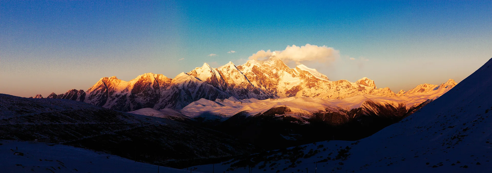

- 西藏段
- 9 天 12/25–1/2
- 同行安排
- 4 人 7 座商務車
- 全程最高點
- 5,190 m 那根拉山口
沿途風景
從林芝到拉薩，點相片查看當天的安排。
出發準備清單
證件、付款、保暖裝備同電子用品。
完成進度
0 / 0勾選只儲存在你這部裝置的瀏覽器。
清單已全部完成。
出發須知
行前核對高原健康、冬季交通、證件同保險。
高原反應
- 抵達林芝後首 48 小時只做輕量活動，避免飲酒。D2 色季拉山口約 4,728m，可按身體狀況取消。
- 上升後若出現頭痛、頭暈、噁心或異常疲倦，告知司機和旅伴，停止上升並休息，症狀惡化應下撤及求醫。
- 休息時氣喘、步態不穩或神志混亂屬緊急徵狀。立即求援及下撤，等待救援時如有氧氣可供氧。
- 現有安排包括車載醫用氧氣及便攜氧氣。出發前向司機確認車載氧氣位置和用法，並向旅遊診所查詢個人高原風險。
天氣（行前估算）
| 地點 | 日間 | 夜間 |
|---|---|---|
| 林芝 / 索松村 | 8–12°C | -4–0°C |
| 拉薩 | 6–9°C | -10–-6°C |
| 日喀則 | 4–7°C | -14–-9°C |
| 納木措 / 那根拉 | -8–-2°C | -20°C 以下 |
原行程的氣溫及日照估算。每晚向司機確認翌日預報、風勢、積雪和道路通行。
證件
- 中國民航局公布，符合港澳旅客簡化手續適用資格者可免辦旅藏確認函。請按各人實際證件及國籍向航空公司和當地旅行社確認。
- 回鄉證有效期要覆蓋整個行程。
- 住酒店、景區、檢查站都要出示證件，隨身帶好。
- 行程是否有路段需要邊防證，請向司機再確認一次。
用車與路況
- 司機只負責開車，不陪同進入景區，也不作導遊講解。
- 冬季山口可能因下雪封路。合約寫明因天氣、政策、路況改行程，只退未產生的住宿費，車費不退。
- 每人限 26 寸行李箱一個（共 4 件）。
- 司機贈送無人機拍攝；禁飛區或天氣差時取消，不退費。
- 出發前一晚會開微信群聯絡。
保險（Generali 單次旅遊）
- 緊急情況先求援及求醫，情況許可時盡快聯絡保險公司。醫療轉送及撤離的安排以保單條款為準。
- 貴重物品隨身帶；留在車上（非上鎖車尾箱）的財物失竊不保。
- 遺失或被盜要在 24 小時內報警取證明。
- 旅伴在行程中途生病，你提早回程的損失不在保障內。
- 出發前按保單確認高海拔活動、醫療撤離及封路的保障和除外事項。
緊急援助：(852) 3187 6888
寺廟禮儀
- 轉經、繞寺、轉佛塔都要順時針走。
- 很多殿內禁止拍照，留意告示。
- 拍攝僧人或藏民前先問一聲。
- 不要摸別人的頭，不要跨過經幡和瑪尼堆。
- 布達拉宮門票實名預約，入場要帶證件。
交通、住宿與費用
航班時間以香港及內地當地時間（UTC+8）顯示。
航班
| 日期 | 航班 | 時間 |
|---|---|---|
| 12/24 | CA110 香港 T1 → 北京首都 T3 | 17:50 → 21:15 |
| 12/25 | CA4127 北京首都 → 林芝米林 | 07:05 → 11:15 |
| 1/2 | CA2764 拉薩貢嘎 → 成都天府 T2 | 10:55 → 13:10 |
| 1/3 | CA411 成都天府 T1 → 香港 T1 | 09:20 → 12:05 |
CA4127 按原行程記錄的國航 9 月 27 日改期通知。出發前以國航最新航班通知為準。
酒店
| 晚 | 酒店 | 備註 |
|---|---|---|
| 12/24 | 北京富永裕隆國際酒店 Beijing Fuyong Yulong International Hotel | 國航免費中轉住宿 · 首都機場附近 |
| 12/25 | 季楓度假酒店（索松村） | 景觀房 |
| 12/26 | 林芝豪生酒店 | 四鑽 |
| 12/27 | 巴松措湖畔風情客棧 | 結巴村 |
| 12/28 | 拉薩布達拉宮蘇路亞朵 | 四星 · 供氧 |
| 12/29 | 日喀則熙客富景酒店 | 四鑽 · 供氧 |
| 12/30–1/1 | 拉薩布達拉宮蘇路亞朵 | 共 4 晚 |
| 1/2 | 天府空港悅享酒店 Joyhub Cheer Hotel | 2 間高級雙床房 · 天府機場附近 |
費用
| 團費 | CNY 6,080 × 4 人 | CNY 24,320 |
| 已付訂金（9月17日） | − CNY 8,000 | |
| 餘款（出發前一週付清） | CNY 16,320 | |
| 每人尚需付 | CNY 4,080 | |
| 成都酒店（Agoda，12/30 自動扣款） | RMB 939.74 |
團費已包含
- D1–D7 七座商務車（油費、過路費、停車費）
- 8 晚酒店，兩人一房，含早餐
- 車內醫用氧氣、每人 1 瓶便攜氧氣、礦泉水
- 司機食宿補貼、接送機、保險
不包含（自備預算）
- 全程午餐和晚餐
- 全程景區門票及觀光車費用
- 導遊服務
- D8 拉薩市內觀光自理